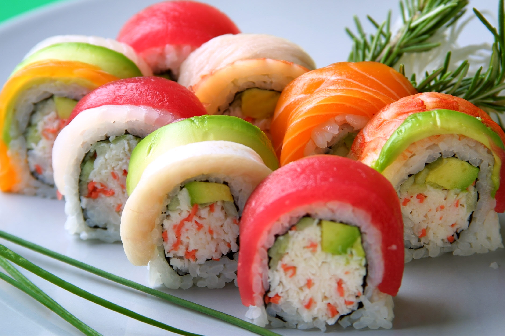
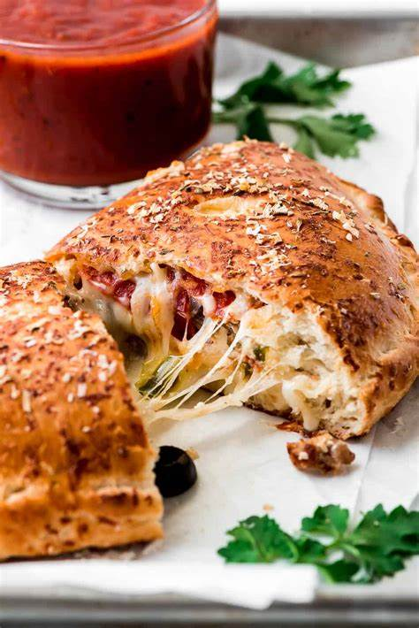

Welcome to "Campus Culinary Treasures," where we navigate you through the best food spots around our campus. Dive into the artful elegance of 'Sushi's' rolls, each a masterpiece of flavor, perfectly located for a serene dining escape. 'Tate Street Coffee' offers a cozy corner for those who appreciate the hearty warmth of home-cooked meals, a stone's throw from your next class. And for the lovers of Italian zest, 'Slices by Tony' serves up a slice of heaven with their authentic wood-fired pizzas. Join us on a flavorful tour that promises to delight your senses with every bite, conveniently nestled within our campus bounds.
Sushi Republic
329 Tate St. Greensboro, NC 27403
Sushi, bento boxes, noodles
M-F: lunch 11:30 AM - 2:30 PM, dinner 5:00 PM - 9:30 PM
Sat: dinner 5:00 PM - 10:00 PM
Closed Sunday

Can never go wrong with the great umami taste available. - $22
Source: (shogautah.com)
Need something more filling? Have this healthy and tasty box! - $12
Source: @_y_512_c_cooking (Instagram)
Slices by Tony
401 Tate St, Greensboro, NC
Pizza, calzones, pasta
Closed on Sunday
11:00 AM - 9:20 PM

Hearty and satisfying, this calzone is filled with juicy steak, melty cheese, and your favorite toppings. - $15
Source: tasteofhome.com

Classic Italian comfort food layered with pasta, ricotta cheese, meat sauce, and mozzarella cheese. - $17
Source: bbcgoodfood.com